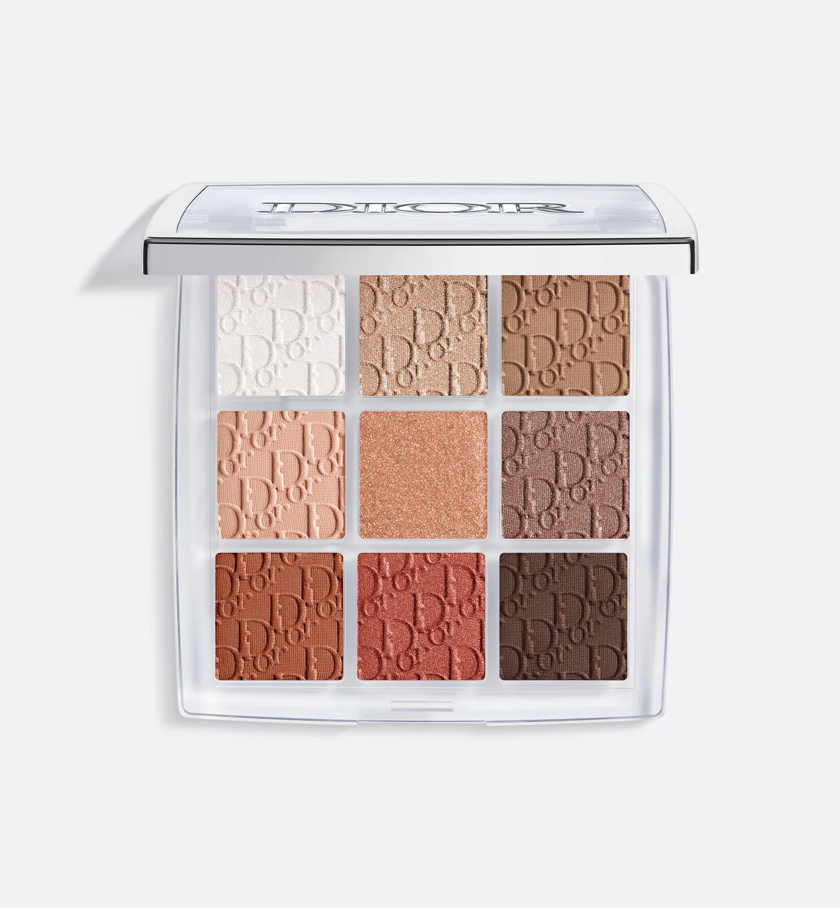
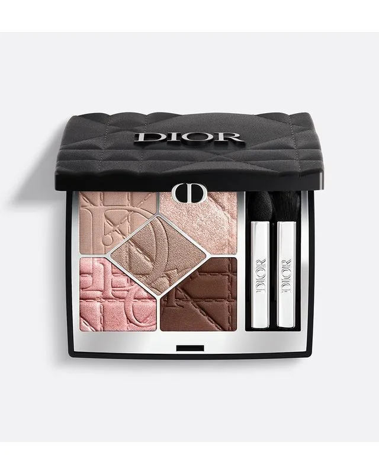
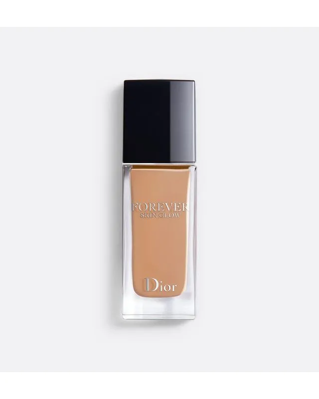

Paletas de Sombra
Dior Backstage Paleta de sombras

A paleta de olhos Dior Backstage Eye Palette é o segredo dos maquiadores Dior para criar maquiagens
das mais naturais às mais intensas, assegurando um acabamento profissional. Nascida do frenesi dos
bastidores dos desfiles Dior, a paleta de maquiagem reúne os essenciais para o olhar: primer, sombra
de olhos de acabamentos mate, nacarado ou metalizado dependendo da harmonia, iluminador e eyeliner.
Adaptadas aos diferentes tons de pele, as nuances revelam texturas moduláveis para um olhar
perfeito.
Para aplicar as sombras com o pincel, utilize a gama Dior Backstage: combine um pincel de sombra de
olhos – pincel para sombrear N° 21, pincel para esbater N° 22 ou N° 23 – com o pincel de eyeliner N°
24.
Diorshow 5 Couleurs - edição limitada

Diorshow 5 Couleurs é a paleta de sombras de olhos assinatura da maquiagem de olhos Dior: um
resultado intenso e de longa duração numa textura ultracremosa e confortável.
Disponível em 4 harmonias em edição limitada, a paleta apresenta-se num estojo com o motivo cannage,
que remete para a mítica carteira Lady Dior. A paleta revela 4 variedades de tonalidades nude com
acabamentos espetaculares, ideais para esculpir o contorno dos olhos e intensificar sutilmente o
olhar.
Acabamento: mate, acetinado ou perolado
Tonalidade: 4 harmonias nude
Duração: longa duração e conforto
Fórmula: pigmentos de origem natural e extrato de centáurea azul
Bases e Corretivos
Dior Forever Skin Glow

Dior Forever Skin Glow é a base de alta duração radiante da Dior que confere alta perfeição à pele
com 24h de uso.
Sua fórmula composta por 86% de ingredientes florais permite que esta base fluida hidrate
intensamente a pele, para deixá-la respirar e melhorar sua qualidade. Formulada para se manter
impecável mesmo em condições de calor e umidade, a base Dior Forever Skin Glow revela um acabamento
radiante da manhã à noite.
A pele é uniformizada e suavizada. Esta base de nova geração é limpa, formulada de acordo com uma
lista rigorosa de ingredientes. Enriquecida com extratos de íris, amor-perfeito selvagem, hibisco e
capuchinha.
Diferenciais:
- Não comedogênico
- Testado em pele sensível
- Proteção contra UVA e UVB (FPS 15)
- 24h de uso comprovado em teste instrumental com 20 mulheres